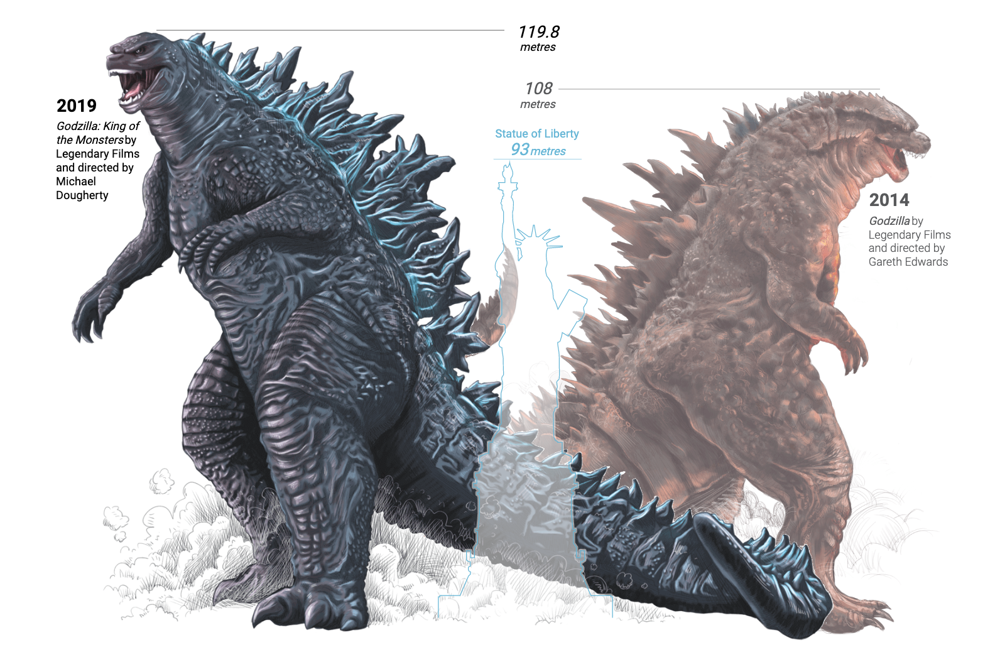
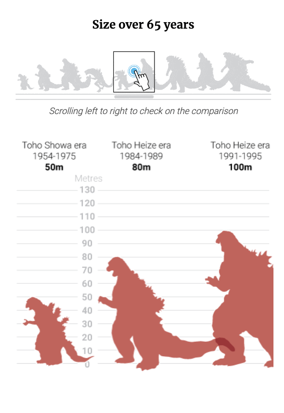
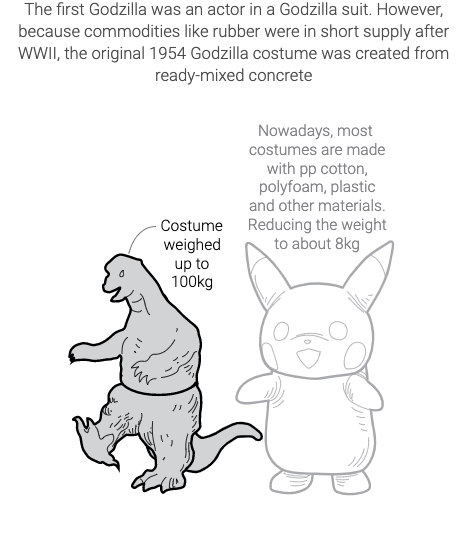
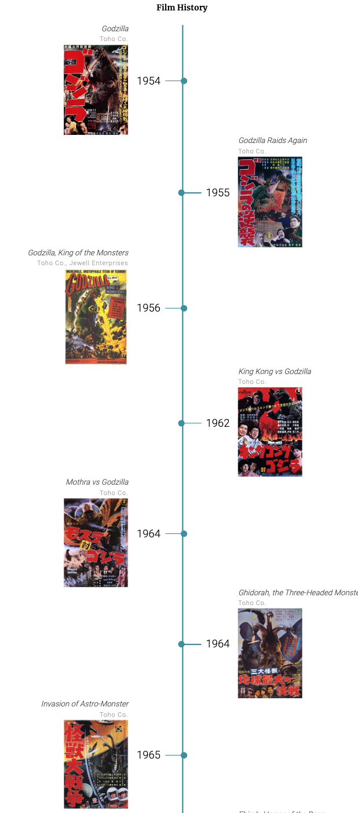

INFOGRAFÍA IMPRESA
En esta infografía se presenta la información de forma visual, empleando esos códigos del lenguaje, y apoyándose con textos cortos y concisos.En esta intervienen descripciones, para transmitir la información mayoritariamente gráfica, como lo son la comparación de ambos Godzilla..
Un primer gráfico grande, y figurativo presenta las diferencias morfológicas y anatómicas de ambos personajes, lo que le permite al receptor hacer una comparación visual de ambos Godzilla. .
Un segundo gráfico, contempla exclusivamente el texto, de forma concisa y sintetizada, lo que le permite al receptor interpretar la información visual de la infografía, saber del pasado del personaje y la evolución del mismo, sin perder el orden jerárquico de la infografía.
El tercer grupo de gráficos mixtos, complementan la información sobre su pasado, presentándonos la morfología de Godzilla, y cómo este ha ido evolucionando en tamaño con el pasar de los años y los filmes.
El cuarto grupo de gráficos también mixtos, nos muestra los enemigos de Godzilla, sus características y sus momentos de aparición en los filmes según orden cronológico, lo que nos permite, entender la evolución del mismo Godzilla.
INFOGRAFÍA DIGITAL
En una infografía digital se muestra la información de una forma fácil, comprensible y entretenida basándose en explotar al máximo las representaciones visuales, omitiendo varios detalles de la infografía impresa.En el primer gráfico figurativo, se nos presenta más información visual que nos permite comparar la evolución anatómica de Godzilla entre 2014-2019.
En el segundo gráfico mixto se presenta al receptor la evolución a través de los años de la anatomía y morfología de Godzilla, pudiendo entender su mejoría como personaje en la actualidad..
Se agrega más información detallada del primer traje de Godzilla y una animación que muestra la acción de ponerse el traje.
También se agrega una línea del tiempo de todas las películas desde 1954 hasta 2019 y sus portadas.
¿Cómo podrían justificarse todas las modificaciones? ¿Se trata de una simple adaptación de datos de un sustrato a otro? Convendría pensar en una reestructuración completa del trabajo infográfico, que se hace atiendiendo a los usos y costumbres asociadas a cada medio?